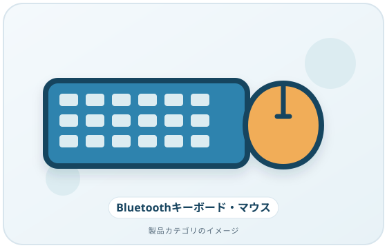
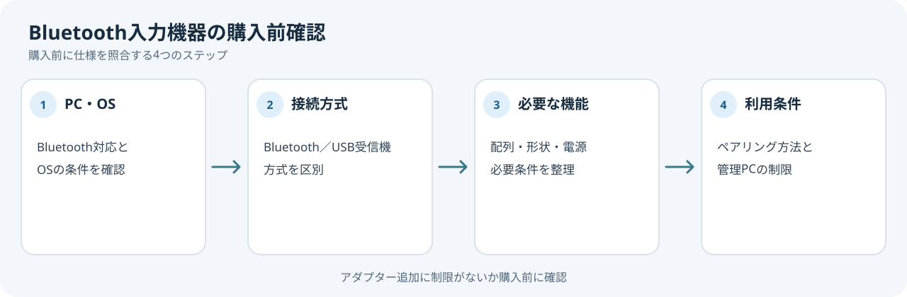

ワイヤレスのキーボードやマウスを選ぶときは、製品の接続方式とPC側の対応を先に確認します。Bluetooth製品は、PCにもBluetooth機能が必要です。Microsoftによると、PCにBluetoothがない場合はUSB Bluetoothアダプターを追加する方法があります。
画像・ボタンはAmazonアソシエイトリンクです。適格購入により紹介料を得る場合があります。

Amazon.co.jpで「Bluetooth キーボード マウス」を探す ↗

購入前に確かめること
- PCの正確な型番とBluetooth対応の有無
- Windowsなど、使用するOSへの対応
- キーボード配列、キー数、必要な特殊キー
- マウスの形状と左右どちらの手で使うか
- 充電式か電池式か、メーカーの案内する電源条件
- 複数端末切り替えなど、実際に必要な機能
最後の項目は製品ごとに仕様が違うため、メーカーの説明で確認します。一般的なBluetoothペアリングと、メーカー独自のUSBレシーバー方式を混同しないようにします。
接続の見通しを確認
WindowsでBluetooth機器を使うには、PC側でBluetoothを有効にし、機器をペアリングモードにして登録します。機器を一覧から見つけられないときは、ペアリングモードや距離、PC側のBluetooth対応を確認します。購入前に、家や職場で利用するPCがその接続方式に対応しているか調べてください。
購入前の確認メモ
- 利用するPCの型番・OS・Bluetooth対応の有無
- BluetoothかUSBレシーバーか、必要な接続方式
- キーボード配列・マウス形状・電源方式
- 会社管理PCでアダプター追加が許可されるか
接続方式とPC側の対応を別々に確認します。管理PCの制限が分からない場合は、注文前に管理者へ確認してください。
どんな人が見直したいか
USB端子を空けたい人はBluetooth接続が候補になります。一方、会社の管理PCでアダプター追加が制限されている場合や、使うPCがBluetooth非対応の場合は、購入前に管理者やメーカーへ確認します。
出典
- Pair a Bluetooth device in Windows — Microsoft Support（確認日: 2026-10-07）
- Troubleshoot Bluetooth not connecting in Windows — Microsoft Support（確認日: 2026-10-07）